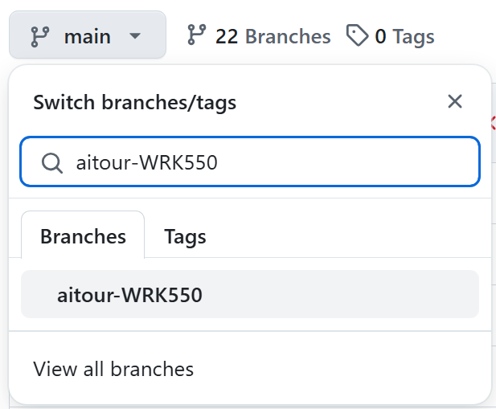

1️⃣ | Getting Started: Instructor-Led Workshop¶
Thie instructions are for participants of the instructor-led "WRK550: Build a Retail Copilot Code-First on Azure AI" workshop offered on the Microsoft AI Tour (2024-2025).
If you're not at an AI Tour event right now, you can register for an upcoming event in a city near you.
- Register to attend at a tour stop near you.
- View Lab resources to continue your journey.
Did you already check the Pre-requisites and verify you met the requirements?
1. Launch Skillable Lab¶
The WRK550 Lab is run using the Skillable platform which provides you with a temporary Azure account (username, password, subscription) that comes pre-provisioned with the resources you need for this lab (Azure AI project, Azure OpenAI models, supporting Azure resources, and data).
Important: Once the Skillable VM is activated, you will have a fixed time limit (75 minutes) to complete the workshop before the VM shuts down. You can track the remaining time in the display at the top-right corner of the Skillable Lab window.
If you are currently in an AI Tour session and have already launched the Skillable Lab and verified credentials - move on to Section 2 below. Otherwise, complete these two steps now.
-
Open a new browser window in incognito mode (window A)
The workshop is conducted completely within a browser environment. You may have an enterprise Azure or GitHub account that you are logged into from your browser that may cause conflicts. To avoid this, we recommend opening a new browser window in incognito mode (private mode) with your preferred browser.
-
Open the WRK550 Lab link provided by your instructor in your browser.
- Click
Launch- this opens the Skillable Lab in a new window with two panes (window B) - Check: You see a
Passwordprompt in the left pane.- This is a virtual machine. We will not use it in this workshop.
- Check: You see a Build a Retail Copilot Code-First on Azure AI tab in right pane
- Follow the instructions in this pane to open the lab instructions.
Do not close the Skillable Lab (window B) - you will need the Azure Credentials shown in this window in the next step.
✅ | CONGRATULATIONS! - Your Skillable Lab is live!
2. Set Up Your Dev Environment¶
The WRK550 Lab requires a Python development runtime (with package dependencies), Visual Studio Code (with specific extensions) and Azure CLI tooling - before we can begin building. The sample comes pre-configured with a devcontainer.json, allowing us to get a pre-built development environment using GitHub Codespaces, with no manual effort required.
In this section, we'll fork the sample repo to our personal profiles - then launch GitHub Codespaces to activate that environment with a Visual Studio Code editor, right in the browser.
Step 1: Open GitHub in Tab 1️⃣¶
The source code for the application used in this workshop is available on GitHub. Let's log into GitHub and copy a fork of the source code to your GitHub account.
- Open a new browser tab (Tab 1️⃣)
-
Navigate to the contoso-chat workshop sample with this link:
Text Only 1https://aka.ms/aitour/contoso-chat -
Sign into GitHub - use your own GitHub account to log in
-
Click Fork in the top-right corner of the page
-
In the "Create a new fork" page, scroll down and uncheck the option "Copy the main branch only".
If you forget to uncheck that option, you will need to delete your fork and try again.
-
Click the Create Fork button.
-
You should now be at the page
https://github.com/YOURUSERNAME/contoso-chatwithin your own GitHub account. -
You now have a copy (known as a fork) of this workshop repository in your own GitHub account! Feel free to play with it, you won't break anything.
-
✅ | CONGRATULATIONS! - Your have a personal copy of the sample to explore!
Step 2: Launch Codespaces in Tab 2️⃣¶
GitHub Codespaces will be our development environment for this workshop. Let's launch CodeSpaces now, starting from the fork of the contoso-chat repository you just created.
Even a free GitHub account will have sufficient GitHub CodeSpaces credits to run this workshop. Be sure to delete the CodeSpace after the workshop to minimize use of your credits.
-
Use the branch selection drop-down on the left side that now reads main and select the branch aitour-WRK550.

-
Click the green <> Code button in the top-right part of the page, click the Codespaces tab, and then click Create codespace on aitour-WRK550.
-
This will launch a new browser tab (Tab 2️⃣). It will take a few minutes for the CodeSpace to be ready for use. In the meantime, continue with the next steps.
Step 3: Open Azure Portal in Tab 3️⃣¶
- Open a new browser tab (Tab 3️⃣)
- Navigate to the Azure Portal:
Text Only 1https://portal.azure.com - Sign in using the
UsernameandPassworddisplayed under "Azure Credentials" in the Skillable Lab window you launched in Step 1 (above). - You will be presented with a "Welcome to Microsoft Azure" screen. Click Cancel to dismiss, or click Get Started if you'd like to take an introductory tour of the Azure Portal.
- In the Navigate section, Click
Resource Groups. - A resource group has been created for you, containing the resources needed for the RAG application. Click
rg-AITOUR. - Check: Deployments (under "Essentials") - There are 35 succeeded Deployments.
- Check: Resources (in Overview) - There are 15 resources in the resource group.
✅ | CONGRATULATIONS! - Your Azure Infra is Provisioned!
Step 4: Open Azure AI Studio in Tab 4️⃣¶
- Open a new browser tab = Tab 4️⃣
-
Navigate to the Azure AI Studio:
Text Only 1https://ai.azure.com -
Click
Sign in-- you will auto-login with the Azure credentials used to sign into the portal. -
Under Management in the left pane, click
All hubs. One hub resource will be listed.An AI Studio hub collects resources like generative AI endpoints that can be shared between projects.
-
Click the listed hub resource name to display it. Check: 1 project is listed under
Projects.An AI Studio project is used to organize your work when building applications.
-
Under "Shared Resources" in the left pane, click
Deployments. Check: 4 models are listed underaoai-connectionThe Model Deployments section lists Generative AI models deployed to this Hub. For this application, we will use the chat completion models
gpt-4andgpt-35-turbo, and the embedding modeltext-embedding-ada-002.
✅ | CONGRATULATIONS! - Your Azure AI Project is ready!
Step 5: View Container Apps Endpoint in Tab 5️⃣¶
Azure Container Apps will host the endpoint used to serve the Contoso Chat application on the Contoso Outdoors website. We have deployed a container app, but have not yet pushed code to it.
- Return to the Azure Portal, Tab 3️⃣
- Visit the
rg-AITOURResource group page - Click the
Container Appresource to display the Overview page - Look for
Application Url(at top right), and click it to launch in new tab (Tab 5️⃣)- This creates a new tab
"Welcome to Azure Container Apps!"displaying the logo
- This creates a new tab
Azure Container Apps (ACA) is an easy-to-use compute solution for hosting our chat AI application. The application is implemented as a FastAPI server that exposes a simple /create_request API endpoint to clients for direct use or integration with third-party clients.
✅ | CONGRATULATIONS! - Your ACA Endpoint is ready!
Step 6: Make sure CodeSpaces has completed launching¶
- Return to your GitHub Codespaces tab, Tab 2️⃣.
You should see the Visual Studio Online development environment. If you have used Visual Studio Code on the desktop, it will look very familiar. You will see these components:
- Left sidebar: The Activity Bar, including the "Prompty" extension logo at the end
- Left pane: The Explorer pane, showing the files in the
contoso-chatrepository - Right pane: A preview of the main README.md file from the repository
- Lower pane: A terminal pane, with a
bashprompt ready to receive input
If you don't see those yet, wait until they appear in your browser.
✅ | CONGRATULATIONS! - Your CodeSpace is running!
We verified our Skillable credentials worked, and launched our Codespaces environment!
Next → Let's Validate Our Setup before we begin building